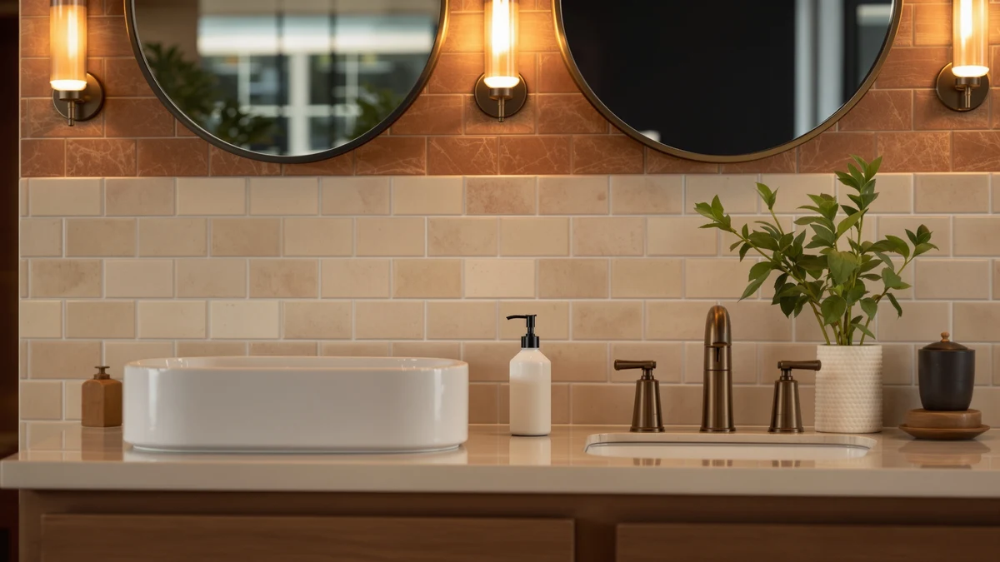

How to Refill a Soap Dispenser the Right Way (2026 Guide)
Prices and picks verified as of September 2026. Independent, reader-supported reviews.


Things to Know Before You Buy
- The pump matters more than the soap. A clogged or air-locked pump ruins a fresh refill, so clearing the tube before you pour is the step people skip.
- Thick and thin soaps need different treatment. A viscous castile or dish soap needs a wider funnel opening and more priming presses than a thin hand soap.
- Rinsing beats topping off. Pouring new soap straight onto old residue breeds buildup around the nozzle over a few refills.
- Most refills take under 15 minutes. The whole process, including a quick rinse and prime, is faster than driving to buy a new dispenser.
Knowing how to refill a soap dispenser properly saves you from buying a new one every time the pump starts sputtering. Most dispensers do not fail because the pump is broken. They fail because someone poured fresh soap on top of old residue, and the dried gunk clogs the tube until nothing comes out. A rinse, a fresh fill, and a few priming pumps usually bring a sluggish dispenser back to full strength.
This guide walks through five steps that work on nearly any pump dispenser, from a simple plastic bottle at the kitchen sink to a stainless steel unit on the bathroom counter. You will need about 15 minutes, a bottle of refill soap, and a couple of household tools you likely already own. By the end, the pump will draw soap in one press instead of three.
What You'll Need
- Supplies: Liquid soap refill, warm water, distilled white vinegar
- Tools: Small funnel, bottle brush or pipe cleaner
Step 1: Remove the pump and check the reservoir
Grip the pump head and unscrew it counterclockwise from the bottle or wall-mount reservoir. Set it soap-side up on a paper towel so the tube does not drip on the counter. Look inside the bottle before you decide how to refill a soap dispenser you have not opened in a while. If there is a thin layer of old soap left, you can top it off. If it is crusted, discolored, or smells off, empty it out and start with a clean reservoir.
This is also the moment to check the reservoir shape. Tall, narrow bottles and wall-mounted units with a long feed tube need a slower pour in the next step so air does not get trapped at the bottom. Wide, short bottles like the OXO Good Grips pump forgive a faster pour because the funnel has more room to work.
Step 2: Rinse the bottle and clear the pump tube
Fill the empty reservoir partway with warm water, swirl it, and dump it out. If soap has dried around the inside walls, add a splash of distilled white vinegar and let it sit for a minute before rinsing again. Vinegar cuts through mineral buildup and dried soap film without leaving a residue behind, which matters since you are about to fill the bottle with something that goes on your hands.
Now turn to the pump itself. Run warm water through the intake tube to flush out anything dried inside it, and use a bottle brush or a bent pipe cleaner to work loose any clog near the base of the tube. A clogged tube is the most common reason a soap dispenser pumps air after a refill, so do not skip this even when the pump still moves smoothly by hand.
Step 3: Pour in the fresh soap through a funnel
Set a small funnel in the mouth of the reservoir and pour the refill soap in slowly, especially with a thicker formula like castile or dish soap. Pouring too fast traps air pockets that later come out as sputtering instead of a clean stream. Fill to about three-quarters full rather than to the brim, since the pump tube needs room to move and a completely full bottle can push soap out around the collar when you screw the pump back on.
If you are switching soap brands or types, wipe the funnel between refills so a thick residue from the last soap does not clog it on the next use. A stainless steel dispenser with a wide neck, like the OXO Good Grips, often does not need a funnel at all, which is one reason it stays easy to refill over years of use.
Step 4: Reattach and prime the pump
Screw the pump back onto the reservoir until it sits snug, then hold the bottle over the sink and press the pump five or six times in a row. The first few presses usually pull up nothing but air, since the tube sits above the new soap line until suction draws it down. Keep pressing at a steady rhythm rather than one hard push, which primes the tube faster than sporadic presses.
If nothing comes out after ten presses, the tube has likely slipped loose inside the bottle. Unscrew the pump again, straighten the tube so it reaches near the bottom of the reservoir, and reattach it. A triple-chamber unit like the simplehuman wall mount takes a bit longer to prime because each chamber has its own tube, so repeat this step for every pump you refilled.
Step 5: Test the pump and wipe down the dispenser
Once soap flows in a steady stream, pump it into the sink two or three more times to confirm the flow is consistent rather than a single lucky press. Check that the stream lands where you expect, since a loose pump collar can angle the nozzle off to one side after reassembly.
Finish by wiping down the outside of the dispenser with a damp cloth to remove any spilled soap or vinegar residue from the refill process. A clean exterior also makes it easier to spot the next time the pump starts sputtering, since dried drips around the base are usually the first visible sign that it is due for another refill.
Common Mistakes to Avoid
The biggest mistake in how to refill a soap dispenser is pouring fresh soap directly onto old, dried residue without rinsing first. That leftover film mixes with the new soap, thickens over a few refills, and eventually clogs the tube from the inside where you cannot see it. Empty and rinse the reservoir whenever the old soap looks discolored or has more than a thin coating left.
Overfilling the bottle is another common error. Filling all the way to the neck leaves no room for the pump tube to move freely, and screwing the collar back on can push soap out around the threads and onto the counter. Stop at roughly three-quarters full and you avoid the mess entirely.
Skipping the priming step trips up a lot of people who assume the pump is broken when it only pulls up air. Give it five or six steady presses before you decide something is wrong. If it still pumps air after that, the tube has slipped out of the liquid rather than the mechanism failing.
Mixing soap types without thinking it through causes trouble too. Combining a thick castile soap with a thin antibacterial hand soap changes the viscosity the pump was designed for, and you end up with an inconsistent stream no matter how well you clean the tube. If you want to switch formulas, rinse the reservoir completely first rather than topping one on top of the other.
Finally, ignoring the pump collar during reassembly leads to leaks. A collar that is not screwed on snug enough lets air in around the threads, which shows up as sputtering that looks like a clogged tube when it is actually a loose seal. Check that the collar sits flush before you call the refill done.
Our Top Picks
These three picks cover the whole refill process, from a dispenser that stays easy to top off to a set of bottles built for decanting bulk soap into a smaller container.

Editor's Pick
OXO Good Grips Stainless Steel
The OXO Good Grips has a wide-mouth stainless steel reservoir that takes a refill straight from the bottle without needing a funnel, which makes it the easiest pump to top off on this list.
$25.95
Check Price on Amazon
Best Value
simplehuman Triple Wall Mount Pumps
The simplehuman triple wall mount holds soap, lotion, and dish liquid in separate chambers, so you refill each one on its own schedule instead of sharing a single reservoir among three products.
$99.99
Check Price on Amazon
Premium Choice
Empty Plastic Pump Bottles Dispenser
This set of empty pump bottles is built for decanting a bulk jug of soap into sink-sized portions, which keeps the funnel and pour steps in this guide fast and mess-free.
$9.98
Check Price on AmazonFrequently Asked Questions
How often should you refill a soap dispenser?
A single bathroom sink dispenser usually needs a refill every two to four weeks with daily use, while a busy kitchen pump can run dry weekly. Watch the pump action rather than a calendar. Once it takes two or three presses to get a normal squirt, the reservoir is close to empty and it is time to refill.
Can you mix different soap brands in the same dispenser?
You can, and most owners do it without issue, but rinse the reservoir first if you are switching from a thick formula to a thin one or the two will separate into layers. Avoid mixing antibacterial soap with a moisturizing formula in the same fill, since the ratios shift with every top-off and you lose track of what is actually in the bottle.
Why does my soap dispenser pump air after refilling?
The pump tube usually sits above the soap line right after a refill, especially in a tall or triple-chamber dispenser, so it draws air for the first several presses. Push the pump down five or six times in a row to pull the tube back into the liquid. If it still pumps air after that, the tube has likely slipped out of the reservoir and needs to be reseated by hand.
Should you dilute liquid soap before refilling a dispenser?
Most bottled hand soaps are formulated to be used straight from the bottle, so diluting them can leave the stream watery and reduce lather. Concentrated castile soap is the exception. Reviewers who buy it consistently note that cutting it with roughly three parts water to one part soap keeps the pump from clogging with thick residue.
Can you refill a foaming soap dispenser with regular liquid soap?
Pouring regular liquid soap straight into a foaming dispenser clogs the fine mesh screen inside the pump, since that mechanism is built to aerate a diluted mix rather than a thick liquid. Dilute the liquid soap with water at roughly one part soap to four parts water before you pour it in, or buy a foaming refill made for that pump style.
Verdict
Once you know how to refill a soap dispenser the right way, it stops being a chore and becomes a five-minute habit. Rinse the reservoir instead of pouring on top of old residue, add the fresh soap slowly through a funnel, and give the pump five or six presses to prime before you assume something is broken. Those three steps solve nearly every sputtering or air-locked pump you will run into. If your current dispenser makes the process harder than it needs to be, the OXO Good Grips is worth the switch. Its wide-mouth stainless steel reservoir takes a refill straight from the bottle, so you skip the funnel entirely and cut a few minutes off every top-off. For a kitchen or bathroom with more than one product to manage, the simplehuman triple wall mount keeps soap, lotion, and dish liquid separate so each one gets refilled on its own schedule. Whichever dispenser you keep, the routine stays the same: rinse, pour, prime, test. Do that every few weeks and your dispenser will keep working like new instead of ending up in the trash the first time the pump acts up.